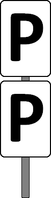

(1)
Bedeutung
Zweimal pfeifen!
›
(2)
Beschreibung
Zwei weiße Tafeln mit schwarzem P senkrecht übereinander.

(3)
entfällt
(4)
Aufstellung
Das Signal Pf 2 steht in der Regel fünf mal so viel Meter vor einem nicht technisch gesicherten Bahnübergang, wie die Geschwindigkeit gemäß VzG in km/h beträgt, mindestens jedoch 100 m.
Wird für das Befahren des nicht technisch gesicherten Bahnübergangs eine Geschwindigkeitsbeschränkung durch ein Signal Lf 4 angezeigt, dann ist das Signal Pf 2 am Mast des Signals Lf 4 angebracht.
(5)
Zusätzliche Regelungen vor Halbschranken
Das Signal Pf 2 kann auch vor durch zugbediente Halbschrankenanlagen gesicherten Bahnübergängen aufgestellt sein, wenn auf zweigleisigen Strecken für das Befahren des Gleises entgegen der gewöhnlichen Fahrtrichtung kein Signal Bü 0 / Bü 1 aufgestellt ist.
Das Signal steht mindestens 200 m, höchstens jedoch 350 m vor dem Bahnübergang und ist links vom Gleis aufgestellt.

(6)
Pfeifen vor dem Bahnübergang
Vom Signal Pf 2 ab ist 3 Sekunden lang und kurz vor dem Bahnübergang zu pfeifen.
Bei unsichtigem Wetter oder wenn Personen oder Fahrzeuge sich dem Bahnübergang nähern, ist außerdem nach Bedarf zu pfeifen.
Hat das Triebfahrzeugpersonal beiderseits der Strecke freie Sicht und nähern sich keine Menschen oder Fahrzeuge in gefahrdrohender Weise, dann darf das erneute Pfeifen kurz vor dem Bahnübergang unterbleiben.
(7)
Mehrere Bahnübergänge
Folgen mehrere Bahnübergänge so dicht aufeinander, dass das Signal Pf 2 für einen folgenden Bahnübergang bereits vor dem rückgelegenen Bahnübergang aufgestellt werden müsste, dann wird nur ein Signal Pf 2 aufgestellt.
Die Anzahl der Bahnübergänge wird auf einer am Signal Pf 2 angebrachten weißen Tafel in schwarzer Aufschrift angezeigt.
Kurz vor einem folgenden Bahnübergang ist erneut zu pfeifen.
(8)
Halteplatz zwischen Signal Pf 2 und dem Bahnübergang
Wo Züge zwischen dem Signal Pf 2 und dem Bahnübergang planmäßig halten, steht eine weitere Pfeiftafel Pf 2 hinter dem Halteplatz des Zuges.
Über dem vor dem Halteplatz stehenden Signal ist dann ein Wiederholungszeichen in Form einer rechteckigen, weißen Tafel mit zwei senkrechten, schwarzen Strichen vorhanden.

Das Signal Pf 2 mit Wiederholungszeichen gilt nur für die vor dem Bahnübergang nicht haltenden Züge.